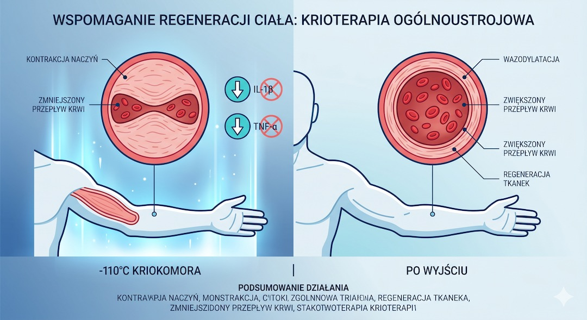
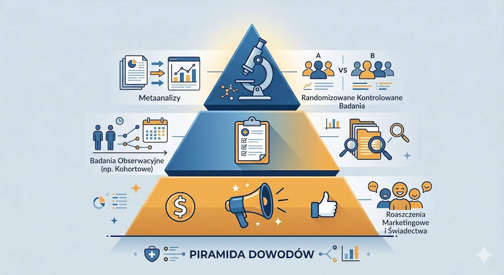
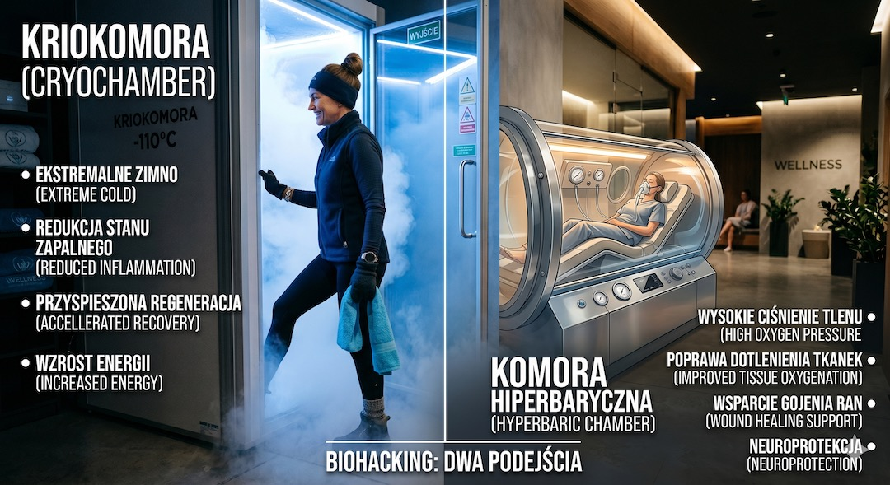

Kriokomory i komory hiperbaryczne obiecują szybką regenerację, ulgę w bólu stawów i biologiczne odmłodzenie. Choć technologie te pochodzą z medycyny klinicznej, ich komercyjne zastosowanie w centrach wellness często wyprzedza twarde dowody naukowe. Po 50. roku życia organizm inaczej reaguje na skrajne zimno i wysokie ciśnienie tlenu – dlatego zanim wejdziesz do komory, musisz poznać rygorystyczne kryteria bezpieczeństwa i odróżnić marketingowy szum od faktów.
Szybka odpowiedź
Po 50-tce warto patrzeć na zdrowie szerzej: liczą się nie tylko objawy, ale też mechanizmy, profilaktyka i spokojne decyzje oparte na danych. Ten artykuł porządkuje najważniejsze fakty, pokazuje najczęstsze pułapki i ułatwia przełożenie wiedzy na codzienną praktykę bez niepotrzebnego stresu i bez chaosu.
Kluczowe wnioski
Kluczowe wnioski po 50-tce warto rozłożyć na praktyczne kroki i odnieść do codziennych decyzji.
- Krioterapia całościowa (WBC) skutecznie łagodzi ból w reumatoidalnym zapaleniu stawów, ale nie jest metodą na odchudzanie.
- Choroba wieńcowa, arytmia i nieuregulowane nadciśnienie to bezwzględne przeciwwskazania do wejścia do kriokomory.
- Komory hiperbaryczne (HBOT) pomagają w leczeniu stopy cukrzycowej, ale ich wpływ na 'długowieczność' pozostaje w sferze hipotez.
- Zawsze wybieraj placówki z nadzorem medycznym – domowe lub 'miękkie' komory nie mają parametrów terapeutycznych.
Biohacking po 50-tce: regeneracja czy ryzyko?
Biohacking to próba optymalizacji zdrowia metodami, które wykraczają poza standardową profilaktykę. Po pięćdziesiątce najczęściej szukamy sposobów na przewlekły ból, lepszy sen i odzyskanie energii. Technologie takie jak krioterapia całościowa (WBC) czy hiperbaryczna terapia tlenowa (HBOT) są tu wymieniane jako fundamenty nowoczesnej regeneracji.
Należy jednak pamiętać, że po 50. roku życia elastyczność naczyń krwionośnych maleje, co sprawia, że skrajne bodźce termiczne są dla układu krążenia większym wyzwaniem. Zanim zainwestujesz w serię zabiegów, sprawdź, czy Twoje podstawowe parametry są w normie, wykonując regularne badania po 50. roku życia. Biohacking bez solidnej bazy medycznej to prosta droga do powikłań.
- WBC: ekspozycja na temperaturę do -160°C przez 3 minuty.
- HBOT: oddychanie czystym tlenem pod ciśnieniem 1,5–3 ATA.
- Marketing wellness często obiecuje więcej, niż potwierdzają badania kliniczne.

Kriokomora: jakie są twarde dane o bólu i zapaleniu?
Zasada działania kriokomory opiera się na szoku termicznym , który powoduje gwałtowne zwężenie, a następnie rozszerzenie naczyń krwionośnych. To 'trening naczyniowy', który stymuluje krążenie i uwalnia endorfiny. Analizy opublikowane w Expert Review of Clinical Immunology potwierdzają, że u pacjentów z chorobami zapalnymi stawów (RZS, ZZSK) krioterapia potrafi zmniejszyć ból nawet o 50% .
Jednak w kwestii odchudzania czy cudownego odmłodzenia skóry, nauka jest znacznie bardziej sceptyczna. Same sesje w zimnie nie zastąpią odpowiedniego planu treningowego. Jeśli szukasz bezpiecznych metod na ruch, sprawdź nasz przewodnik rusz się po 50-tce. Krioterapia to potężne narzędzie wspierające regenerację, ale tylko wtedy, gdy stanowi element szerszej strategii zdrowotnej.
- Skuteczna redukcja bólu mięśniowego (DOMS) i stanów zapalnych.
- Poprawa jakości snu dzięki regulacji układu nerwowego.
- Brak udowodnionego wpływu na spalanie tkanki tłuszczowej.
- Wymagane zabezpieczenie kończyn (rękawiczki, skarpety) przed odmrożeniem.

Komora hiperbaryczna: jak działa tlenowa regeneracja tkanek?
W komorze hiperbarycznej (HBOT) tlen jest tłoczony do Twojego organizmu pod ciśnieniem wyższym niż atmosferyczne. Dzięki temu nasyca nie tylko hemoglobinę, ale rozpuszcza się w osoczu, docierając do miejsc, gdzie krążenie jest upośledzone. To kluczowe w leczeniu trudno gojących się ran i powikłań cukrzycowych, co potwierdzają standardy Undersea and Hyperbaric Medical Society .
W kontekście 'biohackingu' mówi się o HBOT jako metodzie na poprawę koncentracji i regenerację mózgu. Choć wstępne badania są obiecujące, wymagają one jeszcze potwierdzenia na większych grupach pacjentów. Pamiętaj, że fundamentem regeneracji mózgu pozostaje dieta i sen – o czym więcej przeczytasz w sekcji jedzenie dla seniora. Nie szukaj drogi na skróty, jeśli Twój talerz nie wspiera Twojego zdrowia.
- Przyspiesza gojenie owrzodzeń stopy cukrzycowej.
- Wspiera regenerację tkanek po zabiegach chirurgicznych.
- Może pomagać w redukcji mgły mózgowej (badania w toku).
- Wymaga minimum 10-20 sesji, by przynieść trwały efekt kliniczny.
Piramida dowodów: jak nie dać się nabrać na puste obietnice?
W świecie biohackingu łatwo pomylić anegdotę (ktoś poczuł się lepiej) z dowodem naukowym . Złotym standardem są metaanalizy i badania randomizowane (RCT) . Przegląd Cochrane z 2015 roku wykazał, że krioterapia pomaga w bólu mięśni, ale jej przewaga nad prostym odpoczynkiem u osób amatorsko uprawiających sport jest umiarkowana.
Jako świadomy użytkownik po 50-tce, powinieneś kierować się zasadą ograniczonego zaufania do haseł typu 'cofa wiek biologiczny'. Prawdziwe odmłodzenie naczyń dzieje się poprzez codzienną kontrolę parametrów, co opisujemy w dziale porady zdrowotne. Technologie WBC i HBOT traktuj jako cenne uzupełnienie, a nie fundament Twojego zdrowia.
- Relacje celebrytów to nie dowody naukowe.
- Efekt placebo w terapiach fizykalnych może wynosić nawet 30%.
- Zawsze pytaj o badania kliniczne na grupie osób w Twoim wieku.
- Prawdziwa regeneracja wymaga czasu – jedna sesja to tylko impuls.

Bezpieczeństwo przede wszystkim: jaka jest lista kontrolna 50+?
Dla osób w dojrzałym wieku ryzyko powikłań jest realne. W kriokomorze nagły wyrzut adrenaliny może wywołać arytmię, a u osób z chorobą wieńcową – ból dławicowy. Z kolei w komorze hiperbarycznej najczęstszym problemem jest barotrauma ucha środkowego. Jeśli masz problemy z zatokami lub niedawno przeszedłeś operację ucha, HBOT może być czasowo wykluczone.
Kluczem jest stopniowanie bodźców. Nie zaczynaj od najniższych możliwych temperatur ani najdłuższych sesji. Twój organizm potrzebuje czasu na adaptację. Monitoruj swoje reakcje i nie ignoruj sygnałów takich jak zawroty głowy, duszność czy ból w klatce piersiowej. Bezpieczeństwo to proces, który zaczyna się od szczerej rozmowy z lekarzem prowadzącym.
- Bezwzględne zakazy: rozrusznik serca, czynna choroba nowotworowa (bez zgody onkologa).
- Względne zakazy: klaustrofobia, infekcje górnych dróg oddechowych.
- Zawsze miej przy sobie listę przyjmowanych leków.
- Poinformuj obsługę o każdym, nawet małym dyskomforcie podczas sesji.
Plan wdrożenia: jak zacząć bezpiecznie po 50. roku życia?
Najbezpieczniejsza strategia to rozpoczęcie od konsultacji lekarskiej i prostego audytu ryzyka: ciśnienia tętniczego, rytmu serca, chorób przewlekłych oraz przyjmowanych leków. Dopiero na tej podstawie warto zdecydować, czy lepszym pierwszym krokiem będzie krioterapia, komora hiperbaryczna, czy klasyczna rehabilitacja i trening o kontrolowanej intensywności.
W praktyce najlepiej działa model etapowy: najpierw 2-3 sesje testowe o niskiej intensywności, potem ocena samopoczucia i parametrów, a dopiero później pełny protokół. Więcej praktycznych zasad wdrożenia znajdziesz w dziale Zdrowie. Takie podejście zmniejsza ryzyko powikłań i pomaga odróżnić realny efekt terapeutyczny od chwilowego entuzjazmu po nowej terapii.
- Krok 1: konsultacja lekarska i pomiar ciśnienia.
- Krok 2: wersja testowa terapii z monitoringiem.
- Krok 3: ocena efektów po 2-4 tygodniach.
- Krok 4: decyzja o kontynuacji lub zmianie metody.

Najczęściej zadawane pytania
Najczęściej zadawane pytania po 50-tce warto rozłożyć na praktyczne kroki i odnieść do codziennych decyzji.
Czy krioterapia pomaga na bóle kręgosłupa?
Tak, krioterapia całościowa jest skutecznym narzędziem w walce z bólem kręgosłupa o podłożu zapalnym i przeciążeniowym. Działa przeciwbólowo i zmniejsza napięcie mięśniowe, co ułatwia późniejszą rehabilitację i ćwiczenia ruchowe.
Warto przeczytać też: trening siłowy, dieta po 50-tce, sen i regeneracja.
Powiązane tematy: trening siłowy, dieta po 50-tce, sen i regeneracja, suplementacja.
Powiązane tematy: trening siłowy, dieta po 50-tce, sen i regeneracja, suplementacja.
Czy po sesji w komorze hiperbarycznej mogę prowadzić auto?
W większości przypadków tak, sesja HBOT nie wpływa negatywnie na zdolność prowadzenia pojazdów. Jednak po pierwszej sesji warto odczekać 15-20 minut i sprawdzić, czy nie pojawiają się zawroty głowy lub uczucie 'zatkania' uszu.
Czy kriokomora pomaga schudnąć?
Sama w sobie – nie. Choć organizm zużywa energię na ogrzanie się, jest to wydatek rzędu 100-200 kalorii, co nie przekłada się na realną utratę wagi bez deficytu kalorycznego i regularnego ruchu. Krioterapia może jednak pomóc w regeneracji po treningu, co pośrednio wspiera proces odchudzania.
Czy komora hiperbaryczna jest bezpieczna dla serca?
Dla większości osób tak, ale wysokie ciśnienie tlenu może wpływać na rytm serca i ciśnienie tętnicze. Osoby z niewydolnością serca lub wadami zastawkowymi muszą uzyskać bezwzględną zgodę kardiologa przed rozpoczęciem terapii.
Źródła
Źródła po 50-tce warto wdrażać krok po kroku i od razu łączyć teorię z praktyką. Dzięki temu łatwiej utrzymać regularność, poprawić bezpieczeństwo działań i szybciej zauważyć trwałe efekty zdrowotne w codziennym życiu.
- NHS, Hyperbaric Oxygen Treatment Clinical Guidelines, 2024
- Bleakley CM i wsp., Whole-body cryotherapy: empirical evidence, Open Access J Sports Med, 2014
- Cochrane Review, Whole-body cryotherapy for muscle soreness, 2015
- Undersea and Hyperbaric Medical Society, Indications for HBOT, 2024
- Eubank S. et al., Adverse Events Associated with Hyperbaric Oxygen Therapy, StatPearls, 2024
- Miller E. et al., Effects of whole body cryotherapy on recovery after exercise, Frontiers in Physiology, 2021
Uwaga: Artykuł ma charakter informacyjny i edukacyjny. Nie zastępuje konsultacji lekarskiej, diagnozy ani leczenia.